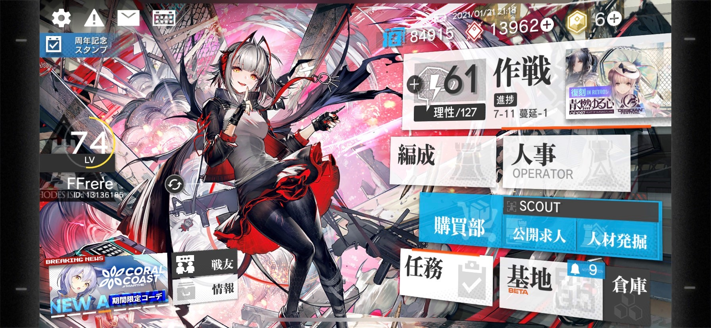
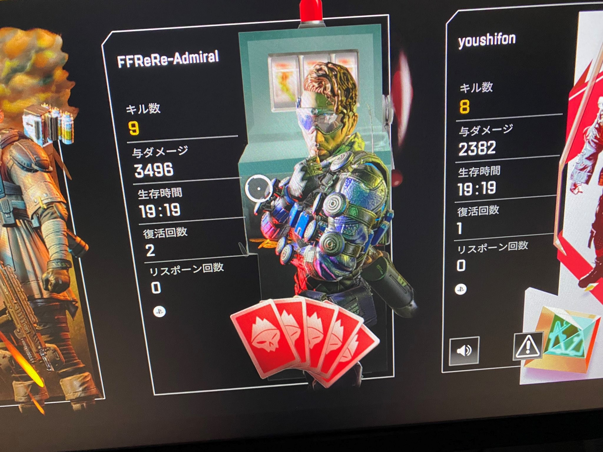

上述していますが、趣味が現状ゲームなのでゲームの話になるのはご了承ください。
では、まず一本目！
アークナイツ

アークナイツですね。スマホゲームでいわゆるソシャゲといわれる部類になりますね。大まかなストーリーをお話しますね。
ここは惑星テラ。人々は移動都市で生活をしていた。この惑星では原石（オリジニウム）に触れることで発現する鉱石病（オリパシー）による差別が当たり前である。その鉱石病患者を治療するためにロドスという製薬会社で働いているDｒ（ドクター）はレユニオンと呼ばれる感染者集団のテロに合い記憶喪失になってしまう。自分が何者かわからない、そんな彼（彼女）は感染者を救うことができるのか？
戦略ストラテジーゲームであり、頭を使ってステージを攻略していくそのなかでオペレーターといわれる戦闘員を鍛えたり、昇進（一般的に進化にい類似している）を行ったりして攻略しよう！って感じのゲームですね。このゲーム,ソシャゲの最大の闇といわれるガチャが意外と優しいんです！最高レアリティは星6なのですが、その一個下の星５はまあ出ますね。それにですね、ガチャ依存度も低く底レアリティの星3（序盤ですべて集まる）も鍛えステージの適正、配置場所さえ見極めれば、意外と終盤まで通用したりしちゃうんですよね…そこがアークナイツの魅力ではないかなと思います。気になったらぜひやってみてください！
それでは2本目！
APEX

APEXですね。FPSゲーマーで知らない人はいないのではないでしょうか？僕は前作のタイタンフォール2を知っていたのでそのまま知るという形にはなりましたね。いわゆるバトルロワイアルといった勝ち抜き戦で味方は自分を含め3人、全員60人の20チームです。。プレイヤーは、まずキャラクターを選びます。キャラクターの数は初期で6人近くいます。まだいますが、ゲームをプレイし解放できます。キャラクター事に能力やアビリティといったものを有しており、戦況により使い分けたりできます。そして出撃ですね。ドロップシップから、行きたいところに降りて武器を拾ったり、アイテムひっろたりして自分やチームに有利になるように戦況を進めます。武器は2つまでしか持てませんから、そこも考える必要がありますね。戦闘では、相手の裏を取ったり、アビリティを駆使して敵を倒していったりなど、戦闘スタイルも豊富であります。たちぃ周りとかも考えて1位を取ろう！といったゲームですね。
このゲームの面白いところは、キャラクターを選べることがでかいと思います。友達と一緒にゲームするときはキャラクター選を考えたり、アビリティの使いどころを考えたりして戦闘を有利にしていったりできる楽しみがあると思います。
またその他の楽しみといえば、バッチシステムではないでしょうか。プロフィールをデコルといいますかそのバッチを見せつけて強さを表したりできる。まぁ、自慢が知らない人にもできるってところですかね。上の写真は3000ハンマーといってダメージを3000以上出した人しかもらえないものですね。自慢のバッチです。
このゲームはPCやPS４といったコンシューマー機でも無料で出来ますので、気になったらやってみてください！